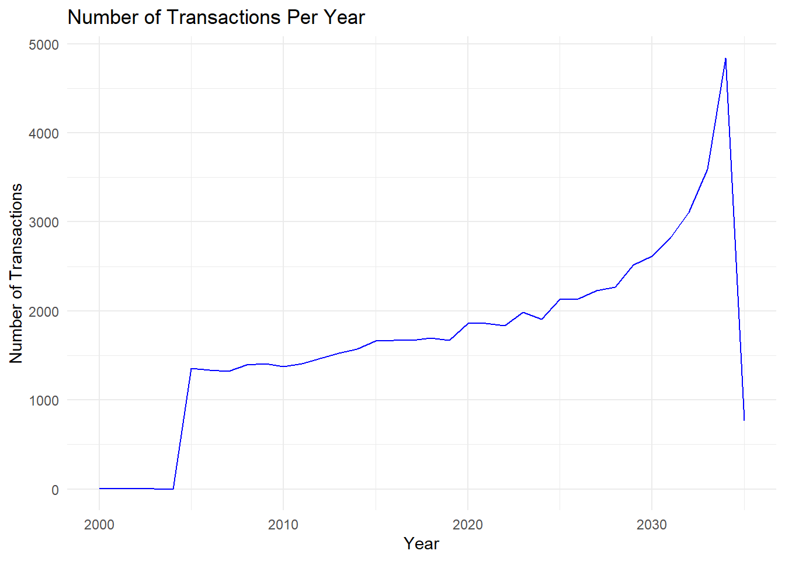
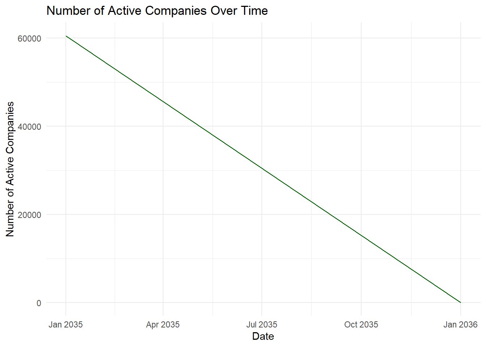

pacman::p_load(tidytext, readtext, quanteda, tidyverse, jsonlite, igraph, tidygraph, ggraph, visNetwork, clock, graphlayouts)Take-home Exercise 3 - Vast Challenge 2024
The Source
The task is taken from the VAST Challenge 2024. Questions from Mini Case 3: Temporal Analysis will be completed.
Challenge Overview


Welcome to Oceanus, an island nation with a healthy market for commercial fishing. Most companies in the region are united in following regulations and implementing sustainable fishing practices. But there are a few companies who are willing to cross ethical lines to increase their catch and their profits. Luckily, FishEye International maintains a watchful eye on fishing data. Their dedicated analysts have been processing data from various sources into a knowledge graph that they call CatchNet: the Oceanus Knowledge Graph.
The Task
Mini-challenge 3 concerns visualizing changes in business relationships within the commercial fishing industry. FishEye wants to understand how companies react to the closure of a competitor caught fishing illegally and how these changes affect influence networks. Design visualizations to show these changes over time and identify companies that may benefit from illegal fishing
Apply appropriate visual analytics methods to help FishEye, a non-profit organization that focuses on illegal fishing, to better identify bias, track behavior changes, and infer temporal patterns from the knowledge graphs prepared by their data analysts.
This take home exercise is done in conjunction with the group project. My group members are Keke and Quek You Ting.
Background
The business community in Oceanus is dynamic with new startups, mergers, acquisitions, and investments. FishEye International closely watches business records to keep tabs on commercial fishing operators. FishEye’s goal is to identify and prevent illegal fishing in the region’s sensitive marine ecosystem. Analysts are working with company records that show ownership, shareholders, transactions, and information about the typical products and services of each entity. FishEye’s analysts have a hybrid automated/manual process to transform the data into CatchNet: the Oceanus Knowledge Graph.
In the past year, Oceanus’s commercial fishing business community was rocked by the news that SouthSeafood Express Corp was caught fishing illegally. FishEye wants to understand temporal patterns and infer what may be happening in Oceanus’s fishing marketplace because of SouthSeafood Express Corp’s illegal behavior and eventual closure. The competitive nature of Oceanus’s fishing market may cause some businesses to react aggressively to capture SouthSeafood Express Corp’s business while other reactions may come from the awareness that illegal fishing does not go undetected and unpunished.
Tasks and Questions:
A key element in stopping illegal fishing is holding the people who own nefarious companies accountable. Thus, FishEye is keenly interested in developing visualization tools that work with CatchNet to identify the people who hold influence over business networks. That is especially difficult with varied and changing shareholder and ownership relationships.
FishEye analysts want to better visualize changes in corporate structures over time. Create a visual analytics approach that analysts can use to highlight temporal patterns and changes in corporate structures. Examine the most active people and businesses using visual analytics.
Using your visualizations, find and display examples of typical and atypical business transactions (e.g., mergers, acquisitions, etc.). Can you infer the motivations behind changes in their activity?
Note: the VAST challenge is focused on visual analytics and graphical figures should be included with your response to each question. Please include a reasonable number of figures for each question (no more than about 6) and keep written responses as brief as possible (around 250 words per question). Participants are encouraged to new visual representations rather than relying on traditional or existing approaches.
Getting Started
Installing and loading the required libraries
Note: Ensure that the pacman package has already been installed.
The following R packages will be used:
tidytext
tidyverse
readtext
quanteda
jsonlite
igraph
tidygraph
ggraph
visNetwork
Importing JSON File
Direct import of the mc3.json file shows an error message indicating that there’s an invalid character in the JSON text, specifically “NaN”. As “NaN” is not recognised as a valid value, preprocessing of the JSON file to replace “NaN” is required.
In the code chunk below, mc3.json is first imported, then all instances of “NaN” are replaced with “null”, and the processed file is written into a json file mc3_fixed.json for later use.
# Read the JSON file as text
json_text <- readLines("data/mc3.json")
# Replace "NaN" with "null"
json_text_fixed <- gsub("NaN", "null", json_text)
# Write the fixed JSON text back to a file
writeLines(json_text_fixed, "data/mc3_fixed.json")Importing preprocessed mc3_fixed.json file
mc3_data <- fromJSON("data/mc3_fixed.json")Check dataframe
Opens new tabs within R workspace, not shown in website
Example of the view is shown in the screenshot tab below
view(mc3_data[["nodes"]])
view(mc3_data[["links"]])mc3_data[[“nodes’]

mc3_data[[“links”]]

View dataframe
- Similar info as shown above
glimpse(mc3_data)List of 5
$ directed : logi TRUE
$ multigraph: logi TRUE
$ graph : Named list()
$ nodes :'data.frame': 60520 obs. of 15 variables:
..$ type : chr [1:60520] "Entity.Organization.Company" "Entity.Organization.Company" "Entity.Organization.Company" "Entity.Organization.Company" ...
..$ country : chr [1:60520] "Uziland" "Mawalara" "Uzifrica" "Islavaragon" ...
..$ ProductServices : chr [1:60520] "Unknown" "Furniture and home accessories" "Food products" "Unknown" ...
..$ PointOfContact : chr [1:60520] "Rebecca Lewis" "Michael Lopez" "Steven Robertson" "Anthony Wyatt" ...
..$ HeadOfOrg : chr [1:60520] "Émilie-Susan Benoit" "Honoré Lemoine" "Jules Labbé" "Dr. Víctor Hurtado" ...
..$ founding_date : chr [1:60520] "1954-04-24T00:00:00" "2009-06-12T00:00:00" "2029-12-15T00:00:00" "1972-02-16T00:00:00" ...
..$ revenue : num [1:60520] 5995 71767 0 0 4747 ...
..$ TradeDescription : chr [1:60520] "Unknown" "Abbott-Gomez is a leading manufacturer and supplier of high-quality furniture and home accessories, catering to"| __truncated__ "Abbott-Harrison is a leading manufacturer of high-quality food products, including baked goods, snacks, and bev"| __truncated__ "Unknown" ...
..$ _last_edited_by : chr [1:60520] "Pelagia Alethea Mordoch" "Pelagia Alethea Mordoch" "Pelagia Alethea Mordoch" "Pelagia Alethea Mordoch" ...
..$ _last_edited_date: chr [1:60520] "2035-01-01T00:00:00" "2035-01-01T00:00:00" "2035-01-01T00:00:00" "2035-01-01T00:00:00" ...
..$ _date_added : chr [1:60520] "2035-01-01T00:00:00" "2035-01-01T00:00:00" "2035-01-01T00:00:00" "2035-01-01T00:00:00" ...
..$ _raw_source : chr [1:60520] "Existing Corporate Structure Data" "Existing Corporate Structure Data" "Existing Corporate Structure Data" "Existing Corporate Structure Data" ...
..$ _algorithm : chr [1:60520] "Automatic Import" "Automatic Import" "Automatic Import" "Automatic Import" ...
..$ id : chr [1:60520] "Abbott, Mcbride and Edwards" "Abbott-Gomez" "Abbott-Harrison" "Abbott-Ibarra" ...
..$ dob : chr [1:60520] NA NA NA NA ...
$ links :'data.frame': 75817 obs. of 11 variables:
..$ start_date : chr [1:75817] "2016-10-29T00:00:00" "2035-06-03T00:00:00" "2028-11-20T00:00:00" "2024-09-04T00:00:00" ...
..$ type : chr [1:75817] "Event.Owns.Shareholdership" "Event.Owns.Shareholdership" "Event.Owns.Shareholdership" "Event.Owns.Shareholdership" ...
..$ _last_edited_by : chr [1:75817] "Pelagia Alethea Mordoch" "Niklaus Oberon" "Pelagia Alethea Mordoch" "Pelagia Alethea Mordoch" ...
..$ _last_edited_date: chr [1:75817] "2035-01-01T00:00:00" "2035-07-15T00:00:00" "2035-01-01T00:00:00" "2035-01-01T00:00:00" ...
..$ _date_added : chr [1:75817] "2035-01-01T00:00:00" "2035-07-15T00:00:00" "2035-01-01T00:00:00" "2035-01-01T00:00:00" ...
..$ _raw_source : chr [1:75817] "Existing Corporate Structure Data" "Oceanus Corporations Monthly - Jun '35" "Existing Corporate Structure Data" "Existing Corporate Structure Data" ...
..$ _algorithm : chr [1:75817] "Automatic Import" "Manual Entry" "Automatic Import" "Automatic Import" ...
..$ source : chr [1:75817] "Avery Inc" "Berger-Hayes" "Bowers Group" "Bowman-Howe" ...
..$ target : chr [1:75817] "Allen, Nichols and Thompson" "Jensen, Morris and Downs" "Barnett Inc" "Bennett Ltd" ...
..$ key : int [1:75817] 0 0 0 0 0 0 0 0 0 0 ...
..$ end_date : chr [1:75817] NA NA NA NA ...
Note
mc3_date[[“nodes”]] dataframe contains 15 columns and 60520 rows.
mc3_date[[“links”]] dataframe contains 11 columns and 75817 rows.
Note
On closer inspection of mc3_data, we note some issues to be rectified:
- Columns containing dates are treated as “Character” data type instead of date data type, which is incorrect. Thus, the data type of the following fields need to be changed to “Date”” data type:
- founding_date
- _last_edited_date
- _date_added
- start_date
- _last_edited_date
- _date_added
- dob
- Some columns have missing values, which need to be handled appropriately for ease of later analysis.
- Some columns are prefixed with “_”, we remove them to reduce chance of bugs later
Missing Values
Identify the percentage of missing values within the dataset
# Function to calculate missing value percentages
calculate_missing_percentage <- function(df) {
total_values <- nrow(df) * ncol(df)
missing_values <- sum(is.na(df))
missing_percentage <- (missing_values / total_values) * 100
return(missing_percentage)
}nodes_missing_percentage <- calculate_missing_percentage(mc3_data[["nodes"]])
nodes_missing_percentage[1] 35.11952nodes_missing_by_column <- sapply(mc3_data[["nodes"]], function(x) sum(is.na(x)) / length(x) * 100)
nodes_missing_by_column type country ProductServices PointOfContact
0.00000 0.00000 85.34204 85.38334
HeadOfOrg founding_date revenue TradeDescription
85.35691 85.34204 85.36847 85.34204
_last_edited_by _last_edited_date _date_added _raw_source
0.00000 0.00000 0.00000 0.00000
_algorithm id dob
0.00000 0.00000 14.65796 links_missing_percentage <- calculate_missing_percentage(mc3_data[["links"]])
links_missing_percentage[1] 9.059973links_missing_by_column <- sapply(mc3_data[["links"]], function(x) sum(is.na(x)) / length(x) * 100)
links_missing_by_column start_date type _last_edited_by _last_edited_date
0.1187069 0.0000000 0.0000000 0.0000000
_date_added _raw_source _algorithm source
0.0000000 0.0000000 0.0000000 0.0000000
target key end_date
0.0000000 0.0000000 99.5410000
Note
Nodes: Overall, there are 35.12% missing values. While most columns have no missing values, the majority of those with missing data pertain to optional attributes:
ProductServices (Optional) - 85.34%
PointOfContact (Optional)- 85.38%
HeadofOrg (Optional) - 85.36%
founding_date - 85.34%
revenue (Optional) - 85.37%
TradeDescription (Optional) - 85.34%
dob - 14.66%
Links: Overall, there are 9.06% missing values. Most of the columns do not contain missing values, except for:
start_date - 0.12%
end_date (Optional) - 99.54%
In addition, according to the VAST2024 - MC3 Data Description file, all empty values in the revenue column are supposed to have been set to 0. However, there are still some values with “NA”.
Setting empty values in revenue to 0
# Create a copy of mc3_data
mc3_data2 <- mc3_data
# Set empty values in revenue to 0 and save it to the new list
mc3_data2$nodes$revenue <- ifelse(is.na(mc3_data2$nodes$revenue) | mc3_data2$nodes$revenue == "", 0, mc3_data2$nodes$revenue)Verify changes
# ensure no more missing values in revenue column
sum(is.na(mc3_data2$nodes$revenue))[1] 0Rename Columns
Remove prefix “_” from columns to reduce chance of issues later
# Function to remove leading underscores from column names
remove_leading_underscores <- function(df) {
colnames(df) <- gsub("^_", "", colnames(df))
return(df)
}
# Create a copy of mc3_data2 and name it mc3_data3
mc3_data3 <- mc3_data2
# Apply the function to the nodes and links data frames in mc3_data3
mc3_data3$nodes <- remove_leading_underscores(mc3_data3$nodes)
mc3_data3$links <- remove_leading_underscores(mc3_data3$links)Verify changes
colnames(mc3_data3$nodes) [1] "type" "country" "ProductServices" "PointOfContact"
[5] "HeadOfOrg" "founding_date" "revenue" "TradeDescription"
[9] "last_edited_by" "last_edited_date" "date_added" "raw_source"
[13] "algorithm" "id" "dob" colnames(mc3_data3$links) [1] "start_date" "type" "last_edited_by" "last_edited_date"
[5] "date_added" "raw_source" "algorithm" "source"
[9] "target" "key" "end_date" Standardising Date Time Formats
In preparation for temporal analysis
# Create a copy of mc3_data3 and name it mc3_data4
mc3_data4 <- mc3_data3
# Convert date columns to Date-Time type
mc3_data4$nodes <- mc3_data4$nodes %>%
mutate(
founding_date = ymd_hms(founding_date),
last_edited_date = ymd_hms(last_edited_date),
date_added = ymd_hms(date_added),
dob = ymd_hms(dob)
)
mc3_data4$links <- mc3_data4$links %>%
mutate(
start_date = ymd_hms(start_date),
last_edited_date = ymd_hms(last_edited_date),
date_added = ymd_hms(date_added),
end_date = ymd_hms(end_date)
)
Note
The ymd_hms function is designed to work with character vectors and will return NA for any existing NA values. This means that any NA value in the original columns will remain NA after the conversion.
Verify changes
# View the first few rows of the date columns in nodes
head(mc3_data4$nodes %>% select(founding_date, last_edited_date, date_added, dob)) founding_date last_edited_date date_added dob
1 1954-04-24 2035-01-01 2035-01-01 <NA>
2 2009-06-12 2035-01-01 2035-01-01 <NA>
3 2029-12-15 2035-01-01 2035-01-01 <NA>
4 1972-02-16 2035-01-01 2035-01-01 <NA>
5 1954-04-06 2035-01-01 2035-01-01 <NA>
6 2031-09-30 2035-01-01 2035-01-01 <NA># View the first few rows of the date columns in links
head(mc3_data4$links %>% select(start_date)) start_date
1 2016-10-29
2 2035-06-03
3 2028-11-20
4 2024-09-04
5 2034-11-12
6 2007-04-06# Summary of date columns in nodes
summary(mc3_data4$nodes %>% select(founding_date, last_edited_date, date_added, dob)) founding_date last_edited_date
Min. :1945-01-01 00:00:00.000 Min. :2035-01-01 00:00:00.0
1st Qu.:1968-01-11 00:00:00.000 1st Qu.:2035-01-01 00:00:00.0
Median :1991-07-03 00:00:00.000 Median :2035-01-01 00:00:00.0
Mean :1991-04-22 15:54:58.072 Mean :2035-01-02 10:34:13.4
3rd Qu.:2014-09-04 12:00:00.000 3rd Qu.:2035-01-01 00:00:00.0
Max. :2035-12-29 00:00:00.000 Max. :2036-01-15 00:00:00.0
NA's :51649
date_added dob
Min. :2035-01-01 00:00:00.0 Min. :1970-01-02 00:00:00.000
1st Qu.:2035-01-01 00:00:00.0 1st Qu.:1978-01-30 00:00:00.000
Median :2035-01-01 00:00:00.0 Median :1986-02-06 00:00:00.000
Mean :2035-01-02 10:28:32.2 Mean :1987-05-23 22:21:33.182
3rd Qu.:2035-01-01 00:00:00.0 3rd Qu.:1995-05-13 00:00:00.000
Max. :2036-01-15 00:00:00.0 Max. :2017-03-20 00:00:00.000
NA's :9047 # Summary of date columns in links
summary(mc3_data4$links %>% select(start_date)) start_date
Min. :1952-05-31 00:00:00.00
1st Qu.:2015-08-18 00:00:00.00
Median :2024-03-22 00:00:00.00
Mean :2022-11-23 10:50:43.11
3rd Qu.:2030-12-13 00:00:00.00
Max. :2035-12-29 00:00:00.00
NA's :14720 view(mc3_data4[["nodes"]])
view(mc3_data4[["links"]])Split Words
The steps below will be used to split text in type column of nodes into two columns: namely type1 and type2.
# Make a copy of mc3_data4
mc3_data5 <- mc3_data4
# Split the type column into two columns, handling the special case
mc3_data5$nodes <- mc3_data5$nodes %>%
mutate(
type1 = sub("(.*?\\..*?)(\\.[^.]+)?$", "\\1", type),
type2 = ifelse(grepl("\\.", type), sub(".*\\.", "", type), "Organization")
)
# remove the original 'type' column
mc3_data5$nodes <- mc3_data5$nodes %>%
select(-type)The steps below will be used to split text in type column of links into two columns: namely type1 and type2.
# Make a copy of mc3_data4
mc3_data6 <- mc3_data5
# Split the type column into two columns, handling the special case
mc3_data6$links <- mc3_data6$links %>%
mutate(
type1 = sub("(.*?\\..*?)(\\.[^.]+)?$", "\\1", type),
type2 = ifelse(grepl("\\.", type), sub(".*\\.", "", type), "")
)
# remove the original 'type' column
mc3_data6$links <- mc3_data6$links %>%
select(-type)Verify changes
view(mc3_data6[["nodes"]])
view(mc3_data6[["links"]])Extract Nodes
For Question 1
#keep only necessary columns
mc3_nodes_1 <- as_tibble(mc3_data6$nodes) %>%
select (-TradeDescription,
-last_edited_by,
-last_edited_date,
-algorithm,
-dob,
-type1,
-founding_date)For Question 2
mc3_nodes_2 <- as_tibble(mc3_data6$nodes) %>%
mutate(country = as.character(country),
id = as.character(id),
ProductServices = as.character(ProductServices),
revenue = as.numeric(as.character(revenue)),
type2 = as.character(type2)) %>%
select(id, country, type2, revenue, ProductServices)Save as rds file for future use
write_rds(mc3_nodes_1, "data/rds/mc3_nodes_1.rds")
write_rds(mc3_nodes_2, "data/rds/mc3_nodes_2.rds")Extract Links
For Question 1
mc3_links_1 <- as_tibble(mc3_data6$links) %>%
select (-last_edited_by,
-last_edited_date,
-date_added,
-key,
-algorithm,
-type1,
-end_date)For Question 2
mc3_links_2 <- as_tibble(mc3_data6$links) %>%
distinct() %>%
mutate(source = as.character(source),
target = as.character(target),
type2 = as.character(type2)) %>%
group_by(source, target, type2) %>%
summarise(weights = n()) %>%
filter(source != target) %>%
ungroup()Save as rds file for future use
write_rds(mc3_links_1, "data/rds/mc3_links_1.rds")
write_rds(mc3_links_2, "data/rds/mc3_links_2.rds")Changes in Corporate Structures Over Time
Load rds file
mc3_links_1 <- readRDS("data/rds/mc3_links_1.rds")
mc3_nodes_1 <- readRDS("data/rds/mc3_nodes_1.rds")The plot shows how transaction volume changes over time, which helps identify periods of increased or decreased activity
transactions_over_time <- mc3_links_1 %>%
group_by(start_date) %>%
summarize(count = n()) %>%
drop_na()Number of Transactions over Time

ggplot(transactions_over_time, aes(x = start_date, y = count)) +
geom_line() +
labs(title = "Transactions Over Time", x = "Date", y = "Number of Transactions")
Note
The dataset spans from year 1952 to 2035.
We can see that from the start of the dataset until about year 2000, there were relatively few transactions. There was a small spike after year 2000, proceeded by exponential growth around 2005. However, there was a dip in transactions in 2035.
The dip could be due to effects after SouthSeafood Express Corp was caught for illegal behaviour and eventually closed.
Analysis should focus on transactions from year 2005 onwards. Data analysed should also be aggregated by year.
Filter data
Filter data to only keep transactions from 2000 (5 years before 2005) to 2035 (end of dataset). We keep some data that occurs before the start of our period of interest to capture any recent changes to entities.
# Filter the data frames to keep only data from the year 2000 and onwards
mc3_links_1_filtered <- mc3_links_1 %>%
filter(start_date >= as.Date("2000-01-01"))Aggregate Data by Year
# Extract year for aggregation
mc3_links_1_filtered2 <- mc3_links_1_filtered %>%
mutate(transaction_year = year(start_date))
# Calculate the number of transactions per year
yearly_txns <- mc3_links_1_filtered2 %>%
group_by(transaction_year) %>%
summarise(num_transactions = n())
# Plot the number of transactions per year
ggplot(yearly_txns, aes(x = transaction_year, y = num_transactions)) +
geom_line(color = "blue") +
labs(title = "Number of Transactions Per Year",
x = "Year",
y = "Number of Transactions") +
theme_minimal()
Note
It is now clearer that the rapid growth in transactions started around 2005, before reaching its peak at 2034 and sharply dropping in 2035, likely due to after effects of the SouthSeafood Express Corp incident.
Number of Active Companies Per Year
# Extract year for aggregation
mc3_nodes_1_filtered <- mc3_nodes_1 %>%
mutate(active_year = floor_date(date_added, "year"))
# Calculate the number of active companies per month
active_companies <- mc3_nodes_1_filtered %>%
group_by(active_year) %>%
summarise(num_active_companies = n())Plot graph

# Plot the number of active companies over time
ggplot(active_companies, aes(x = active_year, y = num_active_companies)) +
geom_line(color = "darkgreen") +
labs(title = "Number of Active Companies Over Time",
x = "Date",
y = "Number of Active Companies") +
theme_minimal()
Note
It can be noted that while the number of transactions showed an increasing trend, the number of active companies are showing a decreasing trend. This suggests that some major players are involved in an increasing number of transactions.
Centrality Measures Over Time
Find unique IDs
# Duplicate mc3_nodes_1_filtered
mc3_nodes_1_filtered2 <- mc3_nodes_1_filtered
# Extract unique IDs from edge source and target
id1 <- mc3_links_1_filtered2 %>%
select(source) %>%
distinct() %>%
rename(id = source)
id2 <- mc3_links_1_filtered2 %>%
select(target) %>%
distinct() %>%
rename(id = target)
# Combine unique IDs and remove duplicates
mc3_nodes_1_filtered2 <- rbind(id1, id2) %>%
distinct() %>%
# Join with node information
left_join(mc3_nodes_1_filtered2, by = "id") %>%
# Add an indicator for unmatched IDs
mutate(unmatched = ifelse(is.na(id), "drop", ""))
# Drop unmatched nodes
mc3_nodes_1_filtered3 <- mc3_nodes_1_filtered2 %>%
filter(unmatched != "drop")Create Graph Object
mc3_graph <- tbl_graph(nodes = mc3_nodes_1_filtered3, edges = mc3_links_1_filtered2, directed = TRUE) %>%
mutate(betweenness_centrality = centrality_betweenness(),
closeness_centrality = centrality_closeness())
theme_graph()Plot Graph
# Assuming you have a function to calculate centrality for each year
calculate_centrality_over_time <- function(nodes, edges, time_unit = "year") {
edges <- edges %>%
mutate(period = year(start_date))
centrality_results <- edges %>%
group_by(period) %>%
do({
current_edges <- .
current_nodes <- nodes %>% filter(id %in% unique(c(current_edges$source, current_edges$target)))
graph <- tbl_graph(nodes = current_nodes, edges = current_edges, directed = TRUE)
graph %>%
mutate(betweenness = centrality_betweenness()) %>%
as_tibble() %>%
summarise(mean_betweenness = mean(betweenness, na.rm = TRUE))
}) %>%
ungroup()
return(centrality_results)
}
# Calculate centrality measures over time
centrality_over_time <- calculate_centrality_over_time(mc3_nodes_1_filtered2, mc3_links_1_filtered3)
# Plot centrality measures over time
ggplot(centrality_over_time, aes(x = period, y = mean_betweenness)) +
geom_line(color = "red") +
labs(title = "Average Betweenness Centrality Per Year",
x = "Year",
y = "Mean Betweenness Centrality") +
theme_minimal()
Note
The nodes represent entities e.g. Logistics Companies, Fishing Companies, and the edges represent relationships between them e.g. Shareholdership. Overall, this graph can help identify central or influential transactions/entities within the network, as well as potential outliers or anomalies based on their position and connectivity patterns.
Identify Top Nodes
Filter out the top nodes,
# Identify top nodes by betweenness centrality
top_nodes <- mc3_graph %>%
as_tibble() %>%
filter(betweenness_centrality >= 3000000)